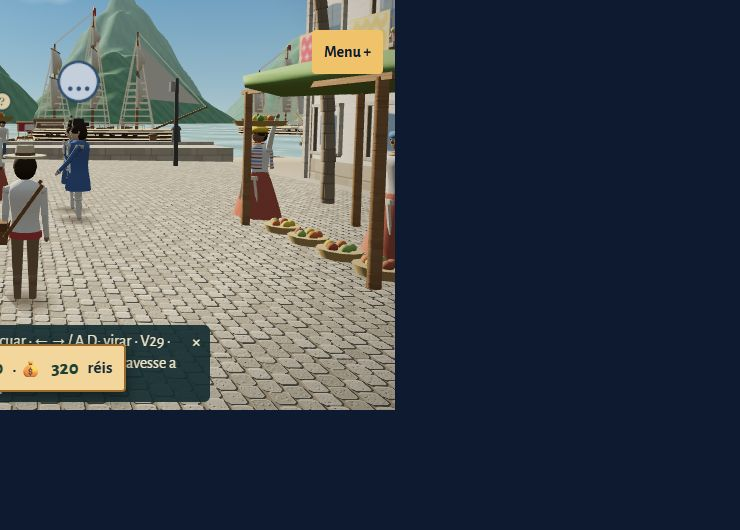

01 /Grécia Antiga
01 /Grécia Antiga415 a.C.Atenas
O dia de Nikos
Da ágora à assembleia: descubra a vida cotidiana e os limites da democracia ateniense.
Jogar AtenasEntre em outras épocas.
Percorra cidades, encontre personagens
e descubra suas histórias.
01 /Grécia AntigaDa ágora à assembleia: descubra a vida cotidiana e os limites da democracia ateniense.
Jogar Atenas
02 /Brasil joaninoAcompanhe Tonico pelas ruas, pelo porto e pelo Paço na cidade que recebeu a corte portuguesa.
Jogar Rio de Janeiro 03 /Brasil colonial
03 /Brasil colonialExplore a vila, converse com seus moradores e descubra o cotidiano de São Vicente no início da colonização.
Jogar São Vicente